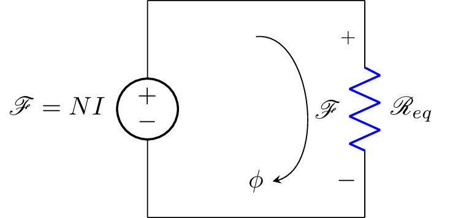

\documentclass{standalone}
\usepackage[american]{circuitikz}
\usepackage{graphicx}
\usepackage{mathrsfs}
\usepackage{latexsym,amssymb,amsmath}
\usetikzlibrary{bending}
\newcommand{\equal}{=}
\begin{document}
\begin{circuitikz}
\draw (0,3) to [V,l_=$\mathscr{F}\equal NI$] (0,0)
(0,3) -- (3,3)
(3,0) -- (0,0)
(3,3) to [R, l^= $\mathscr{R}_{eq}$,v_>=$\mathscr{F}$, color=blue] (3,0);
% \draw[thin, <-, >=triangle 45] (1.5,1.5) node[scale=2]{$\phi$} ++(-90:0.5) arc (-90:100:0.5);
\node (phi) at (1.5,0.5) {$\phi$};
\draw[-stealth] (1.5,2.5) to [bend left=90] (phi);
\end{circuitikz}
\label{fig:q1fig}
\end{document}Created by David Li